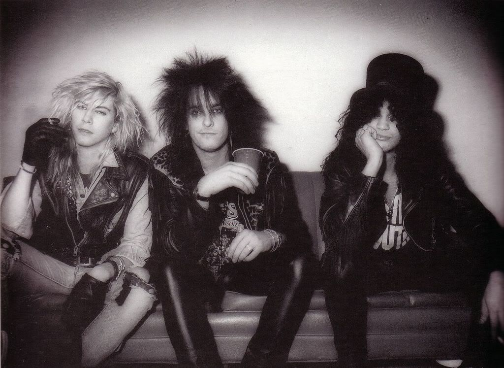
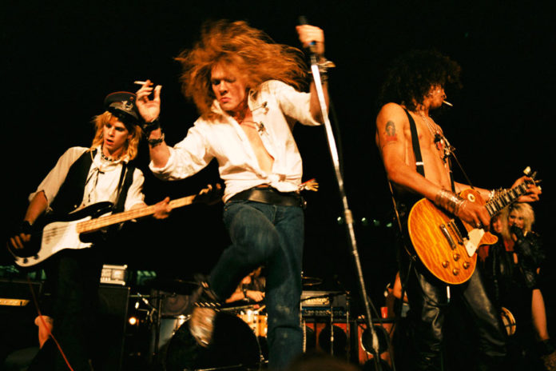
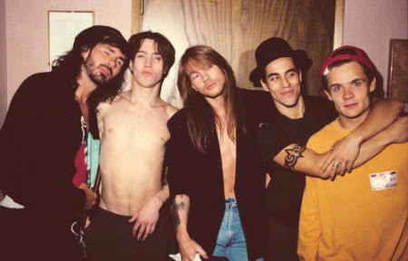
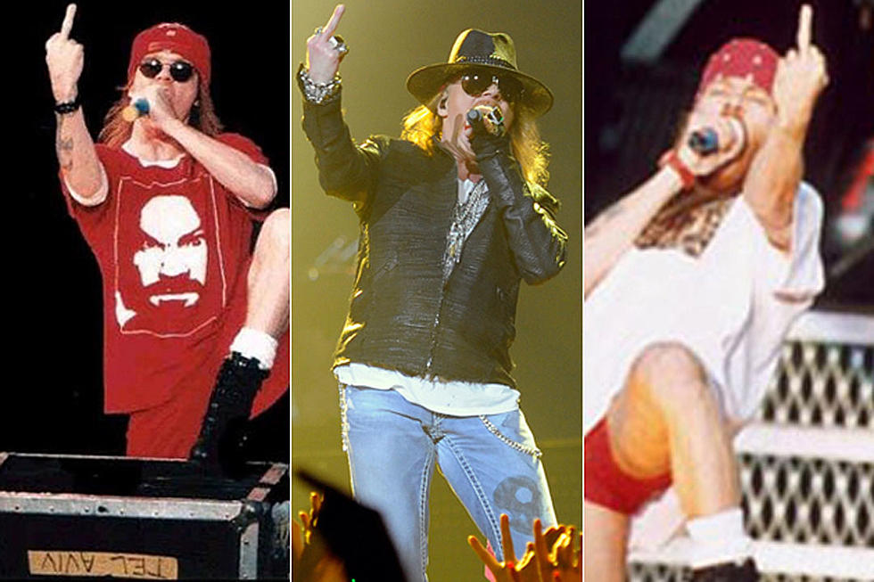
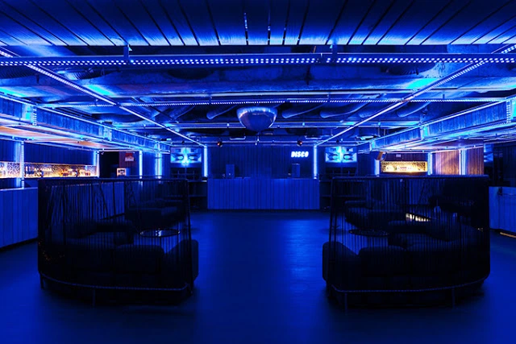
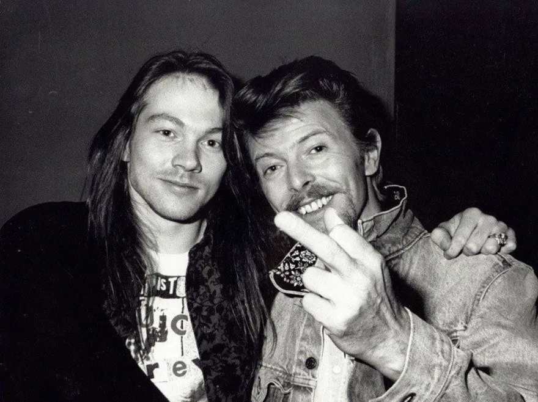
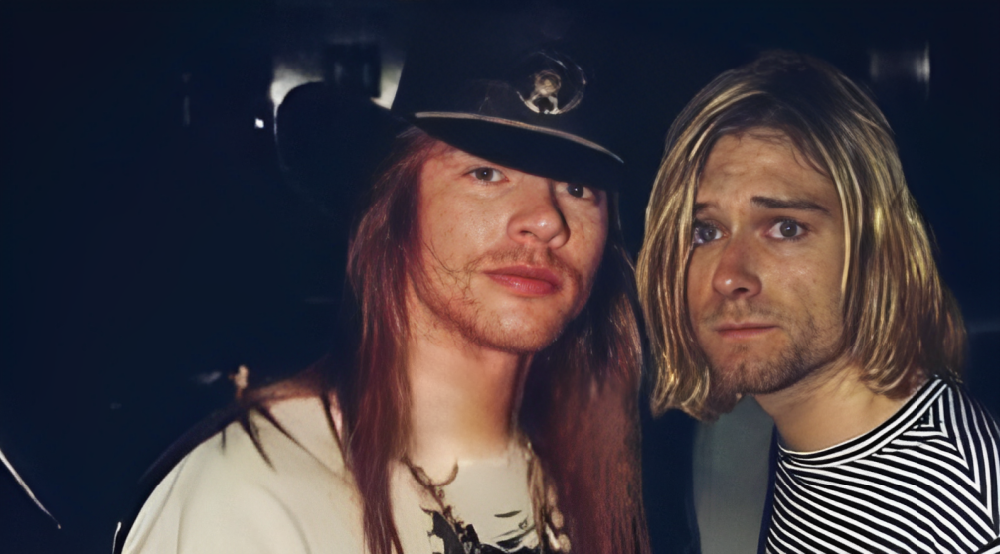
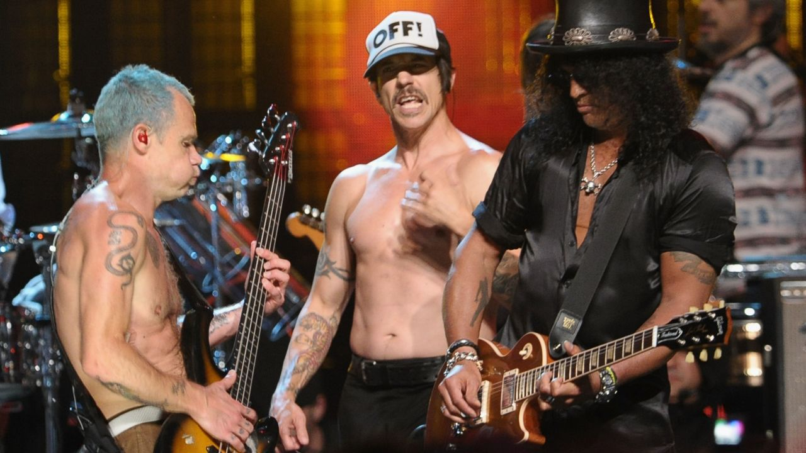

Um espaço de um cômodo na Sunset se tornou o marco zero na cena rock de Los Angeles
Depois que a Hell Tour foi finalizada(não da forma que queriam), criou-se a Hell House. porém na Hell House coisas ruins aconteceriam, para todos os envolvidos.
O prédio estava localizado em West Hollywood, atrás do número 7508 da Sunset Boulevard, perto da junção da North Gardner Street, um espaço de um quarto de cerca de 3,6 metros por 3,6 metros que foi oficialmente designado como "Armazenamen" (agora está atrás de uma loja chamada Russian bookstore). Do outro lado da estrada ficava o Guitar Center e, perto, o showroom de amplificadores Mesa/Boogie. Não era uma moradia de jeito nenhum: tinha porta de enrolar de alumínio, não tinha banheiro, cozinha e nem ar condicionado, e até que Izzy e alguns amigos encontraram um pedaço de madeira abandonada atrás do móvel e usaram para construir um pequeno "dormitorio" para três pessoas, e se voce ficasse realmente muito quieto talvez conseguisse dormir um pouco.
Qualquer pessoa que precisasse do banheiro teria que usar um banheiro comunitário na rua acima. Izzy o descreveu como "um inferno em vida..." Slash, acabou perdendo o seu emprego em uma banca de jornal e então tambem perdeu chance de ficar no apartamento da sua, assim sendo forçado a escolher entre a Hell House ou a falta de moradia e mesmo assim às vezes escolhia a segunda opção e dormia no estacionamento da Tower Records, em vez do pesadelo em que a "Casa" se tornou.
Começou como um espaço de ensaio . Eles estavam usando um quarto em Silver Lake de propriedade de Nickey Beat, um baterista da cena Strip que havia passado cerca de dez minutos no LA Guns. “Nickey não era necessariamente decadente”, lembrou Slash. “Mas ele tinha muitos amigos decadentes...” O Guns N' Roses se conectava com vários deles. Na Hell House, eles escreveram e elaboraram a maioria das canções que apareceriam em Appetite for Destruction , além de algumas que permaneceriam em Use Your Illusion , também. Izzy tinha os riffs de “Think About You” e “Out ta Get Me”; Slash tinha os acordes de abertura e o riff de “Welcome to the Jungle”. “Aquela música, foi a primeira música de verdade que a banda escreveu junto…” disse Slash
Nikki Six produzindo Guns n' Roses?
Nikki Sixx quase foi produtor do Guns N' Roses

Em 1986 a fama de do Guns só aumentava, e foi dada a Tom Zutaut, da Geffen Records a missão quase impossível de achar alguém que controlasse o incontrolável. Alguém que cuidasse da carreira e lapidasse a joia bruta que era o som do Guns.
Algumas tentativas aconteceram sem êxito. O produtor Bill Price não conseguiu assumir a banda, pois estava envolvido com outros projetos. Price estava em Londres e a possibilidade de enviar Guns n' Roses para a inglaterra era nula tendo em vista o risco e perigo que eles poderiam causar em terras britânicas.
O produtor do Motley Crue, Tom Werman, foi outro que não aceitou a missão impossível, com isso, Zutaut tentou contato com o baixista Nikki Sixx, pensando que ele seria um possível nome para refinar o som visceral que o Guns fazia na época, dando um tom mais comercial, sem comprometer a originalidade da banda, algo que nao foi para frente.
"Eu cometi esse erro porque estava com medo de não fazer o melhor trabalho porque eu era viciado em heroína na época, e se talvez minha mãe não tivesse me passado toda aquela informação sobre como meu pai era uma merda, carregando isso coisas… talvez eu não tivesse me viciado, talvez eu tivesse produzido aquele disco…"
Axl Rose desaparecendo
Axl Rose some e banda faz show terrivel

Alan Niven era o cara que iria tentar, fazer com o que o Guns N' Roses desse certo de forma rápida, ja que a Geffen Records nao estava querendo esperar meses até que pudesse ver algum resultado, mas as chances finalmente começaram a aparecer e a banda teve a oportunidade de abrir um show do Alice Cooper e mostrar o potencial nos palcos, além das casas noturnas de Los Angeles.
No dia marcado para Alan ver a banda ao vivo, Axl Rose resolveu não ir junto com os companheiros de banda e o empresário para o local do show. O tempo foi passando, a hora de subir no palco se aproximava e por pressão de Alan, os integrantes subiram ao palco sem o Axl Rose, que acabou, de fato, não comparecendo.
Izzy, Duff e até Slash se esforçaram, nos vocais naquela noite, mas ainda sim gerou grande decepção na plateia, que reagiu com comentários desagradaveis, mas pelo menos conquistaram a confiança de Alan, que reconheceu a tentativa dos membros em meio a uma situação.
Ali ficava marcado uma dos grandes problemas do Guns, os constantes atrasos de Axl Rose.
Banda toca para um público de doze pessoas
Não adianta ter banda se o publico não comparece

Dessa vez o palco era a universidade da Califórnia, abrindo para o Red Hot Chili Peppers, que também dava seus primeiros passos. No dia em questão, Axl apareceu, porem o público não, no total nao haviam mais de doze pessoas na plateia, que hoje talvez nem se lembrem do ocorrido.
As muitas tretas de Axl Rose
Red Hot Chili Peppers, Kurt Cobain, David Bowie e por ai vai...

The St. louis incident
Durante a turnê Use Your Illusion Tour, em 1991, o Guns N' Roses estava fazendo uma serie de gravações em seus shows, e em um desses shows um "fã" estava gravando, algo que até onde sabemos não era permitido, Axl Rose parou de cantar “Rocket Queen” para exigir a saída de um fã que tirava fotos do show. Os pedidos do cantor foram ignorados pela segurança e o vocalista de forma descontrolada se jogou na plateia para agredir a pessoa. “Graças a essa segurança de merda, vou para casa”, anunciou após a confusão.
Confusão em boate brasileira

Em 2010, o Guns N' Roses veio ao Brasil para uma série de shows e Axl Rose concordou em fazer uma apresentação exclusiva na boate Disco, em São Paulo, boate que tinha Marcos Mion como um dos proprietários.
Os roadies da banda chegaram a montar o palco e fazer a passagem de som, mas Axl simplesmente não compareceu ao evento. A frustração de ambas as partes – equipe e organizadores – levou a uma confusão generalizada e agressões entre os brasileiros presentes e os funcionários da banda.
David Bowie

David Bowie era conhecido nos bastidores da indústria musical por ser galanteador ao extremo, sem poupar mulheres comprometidas ou namoradas de amigos
Mas quando o Bowie demonstrou interesse em Erin Everly, namorada de Axl em 89, durante a gravação do clipe de “It's So Easy”, Axl ficou enlouquecido de ciúmes. começando a ameaças Bowie a plenos pulmões e os dois até mesmo trocaram socos.
A linda amizade com Kurt Cobain

Não é segredo que por algum tempo, Axl foi fã de Nirvana até mesmo usou um boné do grupo no clipe de “Don't Cry”, convidou a banda para entrar em turnê com GnR e Metallica e para tocar em uma festa de aniversário. Infelizmente, a admiração não era mútua, a constante postura machista de Axl Rose desagrava Kurt Cobain profundamente, justamente por isso sempre rejeitou todas as propostas de Axl Rose.
Em 92, após Axl chamar Cobain de “um drogado” durante show, os rivais se encontraram no MTV Music Video Awards. Kurt Cobain estava com Courtney Love e a filha Frances Bean, ainda um bebê, quando Axl chegou acompanhado de uma equipe de filmagem e seis seguranças.
“Axl, você quer ser o padrinho da nossa criança?”, provocou Courtney. A princípio, todos deram risada, mas Axl Rose novamente em seu descontrole casual se enfureceu. “Ele simplesmente parou e começou a gritar. As palavras dele eram: 'Cala a boca, vagabunda, ou vou te levar pro asfalto". Então eu disse [para Courtney], "Cala a boca, vagabunda". "Acho que fiz o que ele queria”, contou Cobain à Rolling Stone. A ironia no tom do vocalista do Nirvana encerrou a questão.
Uma homenagem

Mais uma vez Red Hot aparece por aqui. Nos anos 80, surgiram duas das maiores bandas de rock de todos os tempos: Red Hot Chili Peppers e Guns N' Roses. Apesar de terem sonoridades diferentes, as duas bandas californianas se tornaram incrivelmente populares
O baterista do Red Hot Chili Peppers, Chad Smith disse que adorava ouvir o álbum "Appetite for Destruction" enquanto fumava maconha com o guitarrista John Frusciante. Tamanho era o respeito que Chad e John tinham pelo Guns, que decidiram prestar uma homenagem à banda em sua música "Punk Rock Classic", presente no quarto álbum do Red Hot Chili Peppers, "Mother's Milk". No final da música, é possível ouvir um trecho do riff de "Sweet Child O' Mine".
Axl Rose por outro lado não achou a homenagem nada engraçada e ainda acusou a banda de provocação. Anthony Kiedis tentou explicar a situação para Axl, mas como sempre Axl não entendeu o recado. e ifelizmente até hoje as bandas mal se falam, porem mesmo assim Slash se apresentou no Rock and Roll Hall of Fame junto de Red Hot Chili Peppers e Roonie Wood, ambos tocaram Higher Ground
 Uma Historia Guns N' Roses
Uma Historia Guns N' Roses